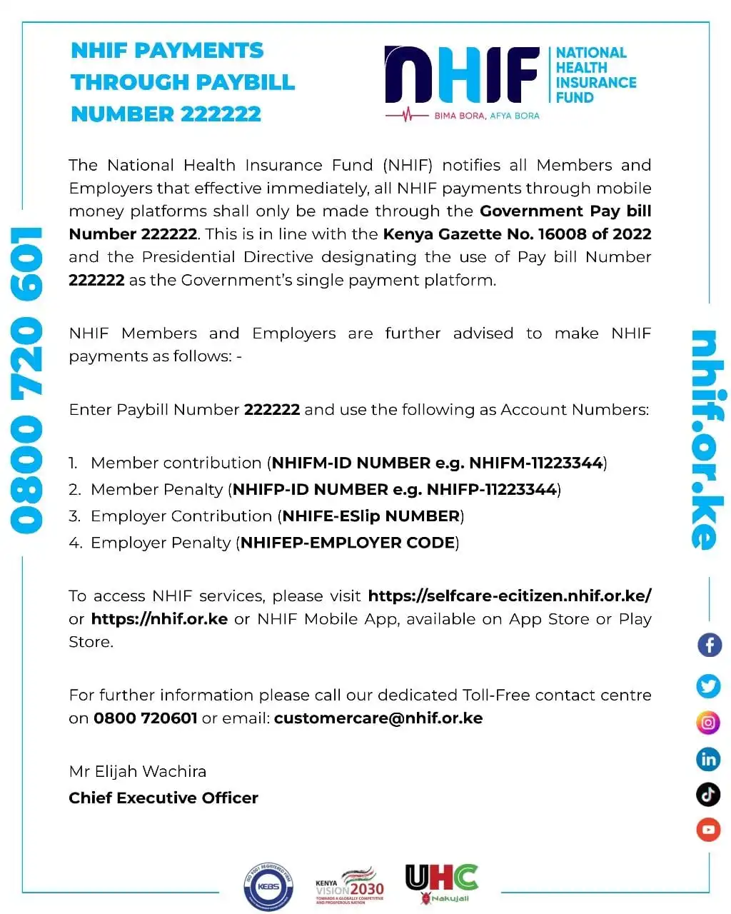
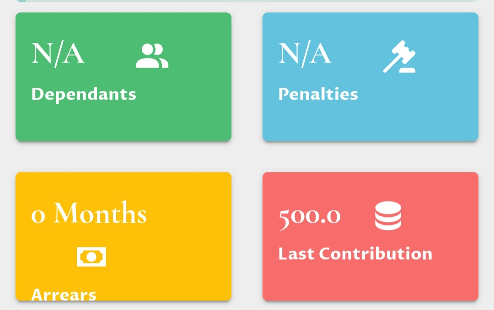
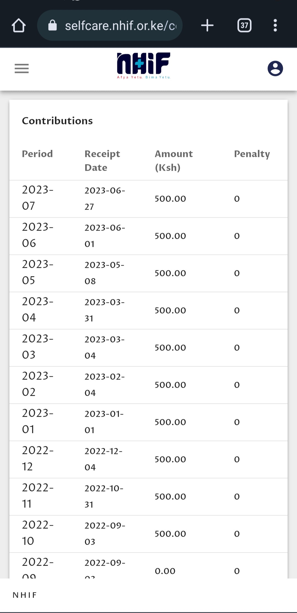
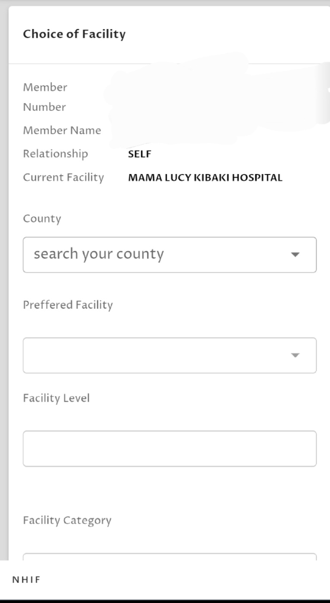

Everything you need to know about NHIF
Table of Contents
- Overview
- NHIF Requirements
- How to Register for NHIF Online
- How to Pay NHIF via M-Pesa
- Multiple Ways to Check NHIF Status
- How to Contact NHIF
- How to Check and Pay NHIF Penalties
- How to Change Registered Phone Number
- Get NHIF Statements
- How to Change Selected NHIF Hospital
1. Overview
The NHIF, established in 1966, provides medical insurance to all members and their dependants. It promotes Universal Health Coverage (UHC) to ensure access to necessary health services without financial difficulties. NHIF members receive services in hospitals, and the hospitals submit claims for reimbursement. The coverage includes in-patient services for the contributor, spouse, and children.
2. NHIF Requirements
To become a member, you need to meet the following requirements:
- Provide a copy of your National ID.
- Be 18 years of age or older.
- Submit a copy of your spouse's National ID (if applicable).
- Provide original and copies of birth certificates for dependents (if you wish to add them as dependents).
- For employed individuals, provide a copy of the employment letter.
3. How to Register for NHIF Online
- Visit the NHIF website at https://www.nhif.or.ke/.
- Click on the "Self-Care" option.
- Select the "Register" option.
- Enter your ID number and birth date.
- Click on "Begin Registration" and fill in the required details on the subsequent page.
- After submission, log in to your account to find your membership number, which may be sent to your phone number.
- Pay the registration fee of Ksh 1500.
- Collect your NHIF card.
4. How to Pay NHIF via M-Pesa
On 12/10/2023 there was an announcement of new changes to the method of payment.
The following steps will help you on how to pay NHIF via M-Pesa:
- Open your SIM Tool Kit or M-Pesa app.
- Go to Lipa M-Pesa.
- Select Paybill and enter
200222222222 as the business/pay bill number (the app will show that the paybill is for NHIF). - Enter your
National ID numberNHIFP-National ID number as your account number. - Enter the amount you want to pay.
- Input your PIN number and confirm the transaction, then send.
- After payment, you will receive a transactional message from M-Pesa confirming your contribution. NHIF will also send a message confirming your payment.
5. Multiple Ways to Check NHIF Status
- Check NHIF Status Online
- Go to https://selfcare.nhif.or.ke/.
- Log in using your number and OTP sent to you (manually enter the OTP, do not copy-paste).
- Look for a section that displays if the payment is up to date.
- On the left-hand side, click on the menu button (three lines) and navigate to the profile to view your status as active.
-
Check NHIF Status Through SMS
- Compose a new SMS.
- Type the letters "ID", space, then your ID number.
- Send the SMS to 21101.
- You will receive a reply showing your member number, ID number, year of birth, last contributions, and your dependents.
- Download and Use the NHIF Application
6. How to Contact NHIF
Contacting NHIF on their social media platforms is a fast way of getting feedback or a response. Simply compose a message or reply on their posts in any of their platforms:
- Twitter Profile: https://twitter.com/nhifkenya?s=20 (Notice: they have a blue tick, there are fake accounts so beware).
- Facebook: https://m.facebook.com/nhifkenya
- General: info@nhif.or.ke
- Enquiry: customercare@nhif.or.ke
- Complaints: complaints@nhif.or.ke
- Fraud: fraud@nhif.or.ke
- Fax: (020) 271 4806
7. How to Check and Pay NHIF Penalties
-
How to Check NHIF Penalties
Navigate to the NHIF self-care platform. Once logged in, there is a section for arrears and penalties.
 -
How to Pay NHIF Penalties
Go to M-PESA Menu, click on Lipa Na M-Pesa, then PayBill.
Step 1. Enter 200222 as the PayBill Number.
Step 2. Enter your National Identification Number with the letter 'y' at the end of the Identification Number (e.g., 1234567890y) as the Account Number.
Step 3. Enter the penalties amount.
Step 4. Enter your Safaricom PIN Number.
Step 5. You will receive a message from M-PESA confirming that you have successfully paid the penalty. The M-PESA message you receive is proof of payment.
8. How to Change Registered Phone Number
Visit your nearest NHIF branch with supporting documents to change your registered phone number.
9. Get NHIF Statements
How to Access NHIF Account Statements:
- By using the NHIF Selfcare Platform
- Dialling *155# and following prompts
- Using 'My NHIF' App which can be downloaded from Google Play Store or Apple Store
- Visiting the nearest NHIF office or Huduma Center
- Sending a text message with the format [ID {space} Your National Identification Number] (e.g., ID 12345678) to 1550
- Sending an email to customercare@nhif.or.ke
10. How to change Hospitals in nhif

- Login to your NHIF account at https://selfcare.nhif.or.ke/
- Click the menu button on the left.
- Navigate to facilities.
- Change hospital.